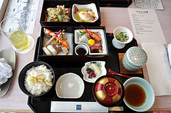

日本料理的擺盤
日本飲食以重視外觀出名，因此曾被喻為「眼睛的料理」，是一門體現美學修養的擺放藝術，
另一方面觀看主廚表演處理食材和烹飪也是這種相見歡廚房文化的特色。日本料理一向都被認為是一絲不苟、
十分精細的美食，好的日本料理除了要能善用四季的新鮮食材之外，更要能發揮食材的天然美味，
所以不論是高湯、調味、刀工、烹調方式都是以保留食物的自然原味為前提。
和食的食材新鮮多樣，裝盤貼合自然風物，並且被認為能體現四季的分明、
地理多樣性以及日本人尊重自然的精神，營養均衡，也與正月、插秧等傳統節慶密切相關，
代表了日本獨有的價值觀、生活樣式和社會傳統。由於日本人深信食材有各自最佳時令
（日語稱「旬」╱しゅん），加上日本在四季均產出不同的農作物，
因此日本料理經常會因照該季節的時令農產物而有所不同。
日本料理店在不同季節的菜單也會有微妙的變化，例如春天竹筍當造，就會有若竹煮。

首頁
第2頁
第3頁
第5頁